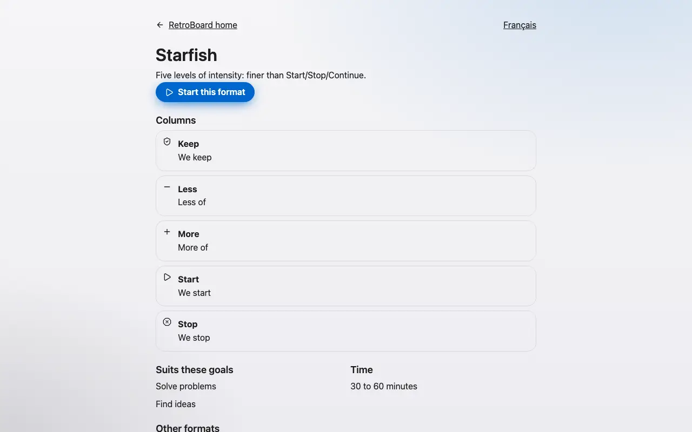
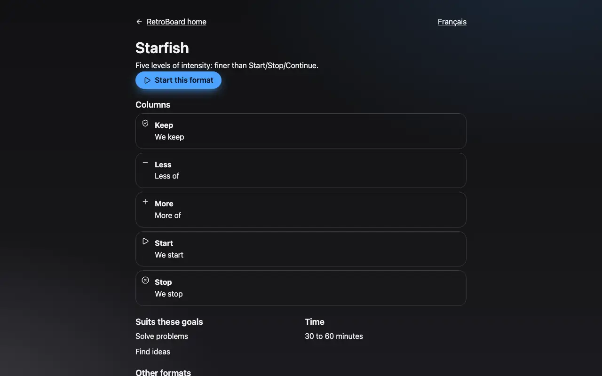
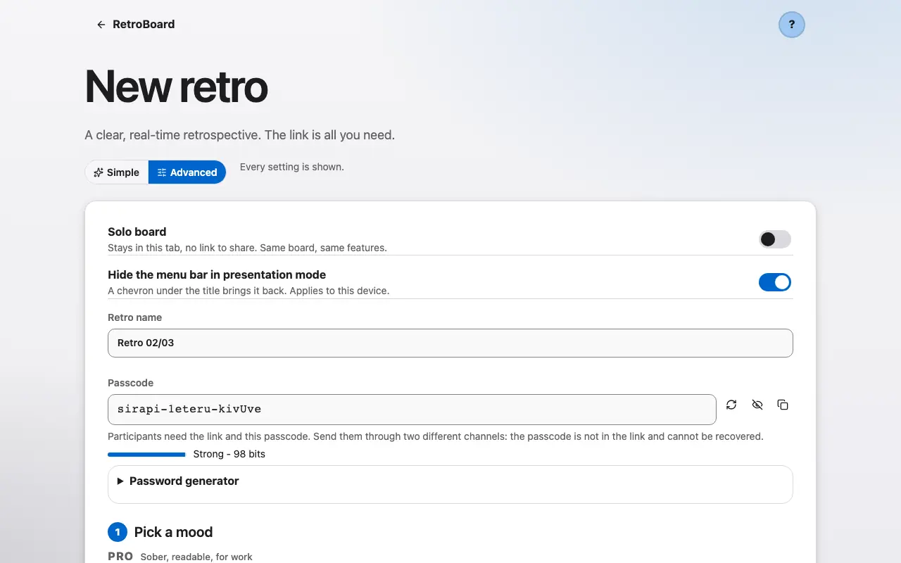
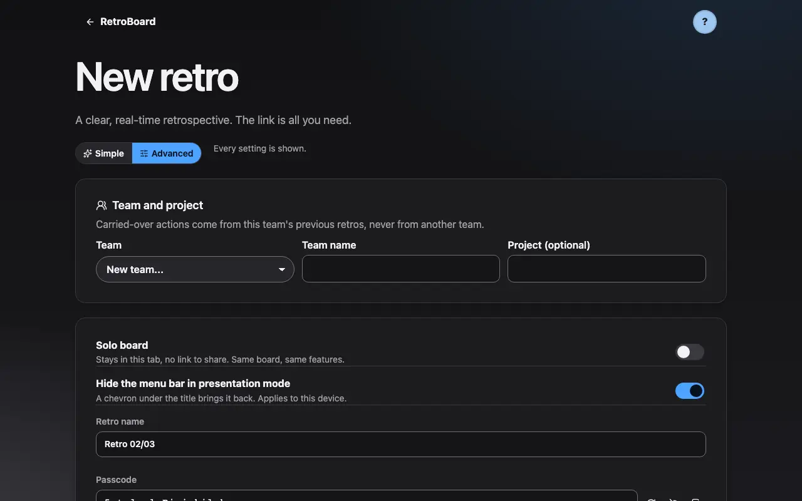

The format pages
Every retro format has its own public page, with its columns and a button to start it.
1 A format page shows its columns, the goals it suits and how long it takes.
The page names the format, says what it is for, lists its columns with their hints, the goals it suits and the time it takes, and links to the other formats. The text comes from the catalogue the application itself uses, so a page can never describe a format the product does not offer.


2 "Start this format" opens the board setup with that format already selected.
Press "Start this format". The setup page opens with the format already selected in the full list; you then give the board a title and continue as usual.

